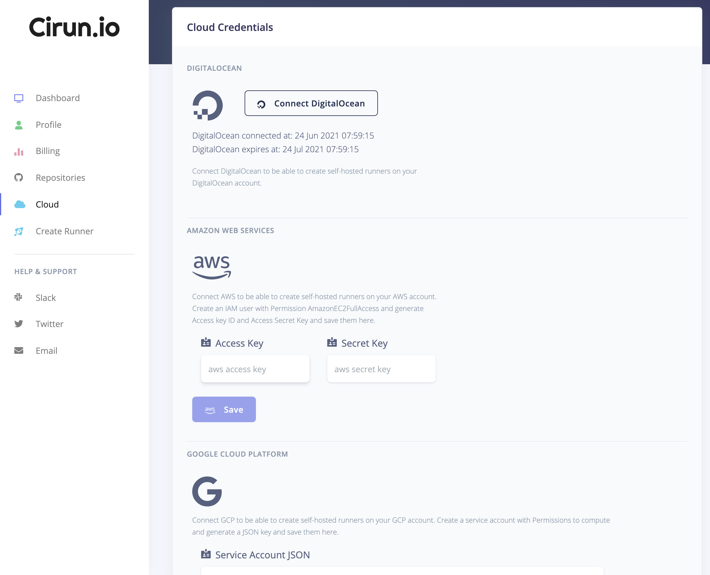

Cloud Authentication¶
Google Cloud Platform¶
Create a Service Account with Compute Engine Admin Permissions
Make to enabled Compute Engine API: https://cloud.google.com/apis/docs/getting-started#enabling_apis
Paste you Service Account JSON in the “Cloud” Tab of Cirun Dashboard under GCP section.
GPU¶
If you need to be able to create GPU enabled runners, make sure to request Google to increase your quota for GPUs, its 0 by default. See https://cloud.google.com/compute/quotas#gpu_quota
Amazon Web Services¶
Create an IAM account to EC2Admin Permissions
Generate an “Access Key” and “Secret Key” for that IAM user
Paste your “Access Key” and “Secret Key” in the “Cloud” Tab of Cirun Dashboard under AWS section.
DigitalOcean¶
Just click on Connect DigitalOcean button in the Cloud in the Cirun Dashboard.
Azure¶
Authentication using Azure is divided into two parts
Register Application¶
Goto
Azure Active Directoryfrom your Azure dashboard.Register a new application in App registrations with name “cirun” and give it “Accounts in any organizational directory (Any Azure AD directory - Multitenant)” access.
Now copy the “Application (client) ID”, “Directory (tenant) ID”
Click on the “Certificates & secrets” and create a new client secret and copy the “Value”
Now goto Subscriptions from Home and copy subscription id
Give access to Application¶
Click on your Subscriptions, goto Access control(IAM), click on “Add role assignment” then select “Contributor”, click on “Select members” and search for “cirun” and select it.
Click on “Review and assign”
Paste your “Subscription ID”, “Tenant ID”, “Client ID” and “Client Secret” in the Cirun Dashboard.
OpenStack¶
For authentication in OpenStack first, we need to build OpenStack.
Setup¶
Warning
Setting up OpenStack will make substantial changes to your system during installation. Only run it on servers or virtual machines that are dedicated to this purpose. The virtual machine will need a multi-core processor and at least 8GB of memory and 100GB of disk space to run smoothly. It has been tested on DigitalOcean(8GB/4vcpu/160GB) and GoogleCloud(n1-standard-4) virtual machines.
We will use DevStack to build OpenStack, it is a series of extensible scripts used to quickly bring up a complete OpenStack environment. Use the following steps to build it or you can also follow the documentation available at the Openstack website.
Add new user¶
Devstack should be run as a non-root user with sudo permissions enabled. To create a new user named stack or anything you prefer and give it sudo privileges use the below commands
sudo useradd -s /bin/bash -d /opt/stack -m stack
echo "stack ALL=(ALL) NOPASSWD: ALL" | sudo tee /etc/sudoers.d/stack
sudo -u stack -i
Download DevStack¶
git clone https://opendev.org/openstack/devstack && cd devstack
Create a local.conf¶
Create a local.conf file with four passwords preset at the root of the devstack git repo. Make sure to change the passwords.
[[local|localrc]]
ADMIN_PASSWORD=secret
DATABASE_PASSWORD=$ADMIN_PASSWORD
RABBIT_PASSWORD=$ADMIN_PASSWORD
SERVICE_PASSWORD=$ADMIN_PASSWORD
Start the install¶
./stack.sh
This will take a 15 - 20 minutes, largely depending on the speed of your internet connection. Many git trees and packages will be installed during this process. After the setup has completed log in to the web UI by pointing your browser to the following URL http://10.20.20.1 or http://<ip of vm>. The username is admin and password will be the password you kept while creating local.conf.
Authentication¶
From dashboard go to
API Accessand click onView CredentialsCopy
User Name,Authentication URLandProject IDand paste these credentials in the Cirun dashboard in the Cloud section.
Router setup (For internet access in the VM)¶
In OpenStack, you need to manually set up the network so that the VM that is/will be created has an internet connection. To set up the router follow the below steps.
When you will open the network section from the sidebar on the OpenStack dashboard you will see two networks public and shared. The public is the public net and we can connect to it by creating a router.

The network topology will look like this

To connect the VM to the internet we need to connect a Router to the public network and then connect that router to the network with which our VM is/will be connected(by default it is shared).
Goto Router from the side panel and create a router, under the External Network select
public.

Go inside the router and add an interface by clicking
Add Interfaceand selecting the Subnet(shared) with which your VM is/will be connected.

After completing the above steps the final network topology will look like
Now if you will create a VM then you will be able to ping any IP.
Cloud Login Page¶
